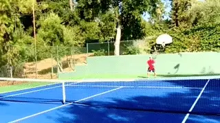
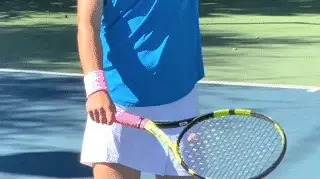
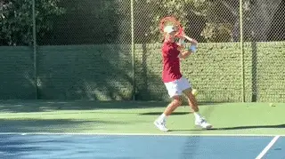

Developing Drop Shots¶
Dave Hagler¶

Mastery of spin gives the ability to make a drop shot bounce back to your side.
You can hit a drop shot with almost pure underspin, a combination of side and under spin or in rare instances with a combination of under and outside spin. If your opponent plays way behind the baseline, is inattentive, does not move forward well, or has trouble with low balls, hit dropshots. If you mix in deep slice approaches, even better.
If you really get a feel for the spin you can learn to drop shots that bounce back over the net to your side!
Grips
I haven't talked much about grips, and I don't believe in absolutes, but you need a trigger finger if you are going to have good touch. If you are trying to hit a forehand drop shot that bounces backwards you probably want something close to a 1 -1 or an eastern backhand grip.
If you are hitting a backhand drop shot that bounces backwards you should be somewhere near a 3 -- 3, or an eastern forehand grip.

Grips for the forehand and backhand drop shots.
Players who try to hit backhand dropshots with eastern backhand grips generally have terrible touch. If your grip moves from continental towards western, your racquet face closes. You may use a closed racquet face when you hit a half volley drop shot on a rising ball, but it is generally reasonable to think of drop shots as an open faced skill.
Experiment a bit, but the grips that seem natural when you bump or bump and spin the ball are about what you will want. If you have a two handed backhand, you will almost certainly want to split your hands prior to the take back on your backhand.
Swings
On a relatively pure underspin dropshot, your hand will move primarily forward with a minimal sideways component. For a sidespin dropshot, your hand will generally move from the outside to the inside, or from left to right if you are a right handed player. This is true for both inside out and outside in spin.
To take the pace off the ball, particularly if it is rising, think of your catching skills. You want to "absorb" with soft hands.

On underspin drop shots the swing is primarily forward. On drop shots with more sidespin the swing is more from the outside to the inside.
Personally, as a left handed thrower and a right handed tennis player, I go back to my baseball days fielding grounders. This technique, slightly modified will work when you are moving towards the net. Do less, not more with these balls and you will have success.
A common mistake is to try to hit your drop shot or drop volley too low. There is a tradeoff -- a higher hit ball will not go as far forward (assuming you haven't hit one that bounces backwards) as a ball hit lower with the same force.
But the higher ball will spend more time in the air. A lot of good shot selection is predicated on hitting the right shot at the right time. If you understand court positioning and the characteristics of the incoming ball, this will help you achieve success.
 players of all ages, but he has a special
passion for junior development. He has
coached numerous sectionally and nationally
ranked junior players and several national
champions. Dave is a USPTA Master
Professional and National Tester, a PTR
Master of Tennis -- Performance, and was
one of the first 100 coaches to complete
the USTA's High Performance Coaching
Program. He has been the USPTA California
Division Pro of the Year and one of 5
National Recipients of the "Pro of the
Year" award from Head and the PTR.
players of all ages, but he has a special
passion for junior development. He has
coached numerous sectionally and nationally
ranked junior players and several national
champions. Dave is a USPTA Master
Professional and National Tester, a PTR
Master of Tennis -- Performance, and was
one of the first 100 coaches to complete
the USTA's High Performance Coaching
Program. He has been the USPTA California
Division Pro of the Year and one of 5
National Recipients of the "Pro of the
Year" award from Head and the PTR.